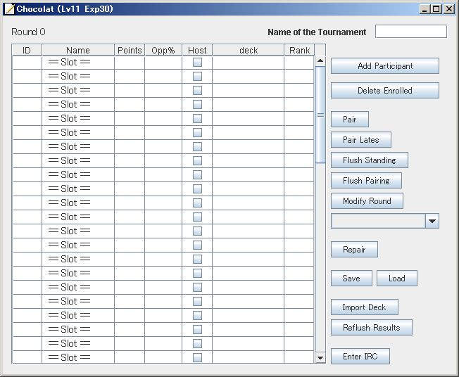
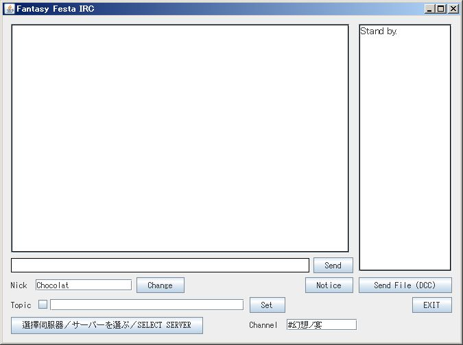
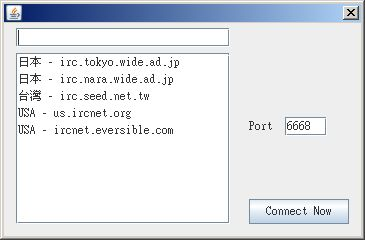

大会管理補助ツールショコラの使い方

起動するとこの画面が出てきます。
右下の「Enter IRC」を押してください。

この画面が出てきます。
「Channel」に接続したいチャンネルを入力してから左下の「サーバーを選ぶ」を押してください。

既存の5つよりサーバーを選ぶか、又はテキストボックスにアドレスを入力して「Connect Now」を押してください。
上手く接続されれば準備完了です。（万が一接続できなかった場合は、「サーバーを選ぶ」より別のサーバーを指定してみてください）
これより下記は別のIRCソフトで同じチャンネルに入り、そちらで行ってください。
まず「！大会開始 大会名」と入力してください。（大会名は任意の大会名です。またこの大会名でxmlが保存されます。）
トピックが「大会名（現在0人）受付参加中です。参加者は「＠参加」と発言してくださいな。」と出れば成功です。
後は参加者を募集してください。
参加者を募集し終わったら「！受付終了」と発言してください。「＠参加」を発言しても受付されなくなります。
次に「！次回戦」と入力します。そうしたら自動的に1回線目のペアリングが発表されます。
参加者は、勝負が付いたら「＠報告 勝ち（負け）」と記入します。これにより自動的に勝敗が記録されます。
全員分の勝敗報告が済んだらまた「！次回戦」と入力します。2回戦目のペアリングが発表されます。これを勝敗が付くまで繰り返します。
全行程が終了したら「！大会終了」と入力します。これにより優勝者がトピックで発表されます。
参加者のデッキ登録を「＠デッキ デッキ構成」で受け付けます。
全行程が終了したらStanding_Rounds○.txt(○には数字）を開き、wiki用に作成されたテンプレをコピペしてください。
基本的な流れは以上です。
コマンド一覧
以下は、Chocolat起動時のコマンド一覧です。（「！」「＠」及び「 」（スペース）は全角半角を区別しません）
マスターコマンド「！」から始まるコマンドで、大会管理者（chocolatを起動している物）のみが使用できるコマンドです。
！大会開始 大会名：入力した大会名で大会の受付を始めます。
！受付終了：受付を終了します。
！次回戦：次に行うペアリングの発表をします。
！大会終了：大会優勝者及び、大会が終了したことをトピックに書き込みます。
コマンド「＠」から始まるコマンドで、だれでも使用可能
＠参加：大会に参加したいユーザーが使用。使用したユーザーの大会受付を行います。
＠ホスト：大会参加者でホストが不可能な人が使用。使用したユーザーのホスト設定を不可にします。
＠リスト：現在の大会参加者をリストアップします。また、ホスト不可ユーザーも同時に表示します。
＠報告 勝ちor負けor引き分け：試合が終了したユーザーが使用。その試合の結果を報告します。
＠結果：報告が済んでいる卓が表示されます。
＠残り：報告が済んでない卓が表示されます。
＠デッキ デッキ構成：デッキ構成を登録します。